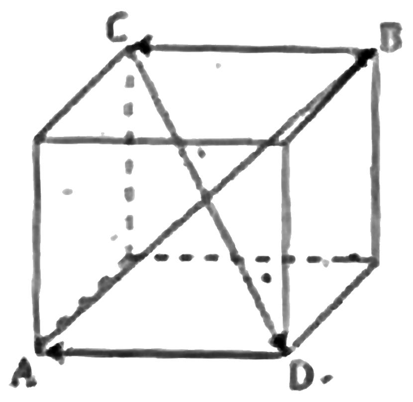

מקבץ 18
10 שאלות · עמודים 75–78 בספר
נתון: a < b < 0
מה מהבאים נכון בהכרח?
הצגת הפתרון
התשובה הסופית1תשובה (1)(½)ab < (½)ba
דרך הפתרון והסבר
a < b < 0 ⇒ ab > 1 ו־ba < 1. (½)t פונקציה יורדת ⇒ (½)ab < (½)ba.
מוקשים נפוצים
(½)t פונקציה יורדת – כיוון אי־השוויון מתהפך.
נבדקהפתרון תואם את מפתח התשובות של הספר.

בסרטוט שלפניכם מתומן משוכלל, שצלעו 4 ס"מ, בו הועברו כמה אלכסונים שיוצרים את המשולשים שבסרטוט.
על פי נתונים אלו והנתונים שבסרטוט, שטח אפורשטח שחור = ?
הצגת הפתרון
התשובה הסופית2תשובה (2)√2 + 1
דרך הפתרון והסבר
שטח המתומן = 2(1 + √2)·16 = 32 + 32√2. כל משולש שחור: ½·4·4·sin135° = 4√2 ⇒ 16√2. אפור = 32 + 16√2. היחס = 32 + 16√216√2 = √2 + 1.
מוקשים נפוצים
הזווית הפנימית במתומן היא 135°, ו־sin135° = √22.
נבדקהפתרון תואם את מפתח התשובות של הספר.
x, y ו־z הם שלושה מספרים עוקבים. נתון: z < y < x
מה מהבאים נכון בהכרח לגבי הביטוי |(y − z)| − |(y + x)| + |(z − x)| ?
הצגת הפתרון
התשובה הסופית2תשובה (2)זוגי
דרך הפתרון והסבר
x = z + 2, y = z + 1: |y − z| = 1, |z − x| = 2, |y + x| = |2z + 3| אי־זוגי. 3 − אי־זוגי = זוגי.
מוקשים נפוצים
הסדר הוא z < y < x, כלומר x הגדול.
נבדקהפתרון תואם את מפתח התשובות של הספר.

בסרטוט שלפניכם קובייה שאורך צלעה הוא 3 ס"מ. עכבר יוצא מנקודה A לטייל במסלול המתואר בציור (A → B → C → D → A).
אם מהירותו של העכבר היא 6 ס"מ לשנייה, תוך כמה זמן (בשניות) יעבור העכבר את המסלול פעמיים?
הצגת הפתרון
התשובה הסופית3תשובה (3)1 + √3
דרך הפתרון והסבר
AB ו־CD אלכסונים מרחביים (3√3 כל אחד), BC ו־DA מקצועות (3). מסלול אחד = 6 + 6√3 ⇒ זמן 6 + 6√36 = 1 + √3 שניות.
מוקשים נפוצים
להבחין בין אלכסון מרחבי (3√3) לבין אלכסון פאה (3√2).
דורש בדיקההמקור לא חד או סותר את המפתח. התשובה המוצגת היא לפי מפתח הספר.
מפתח הספר (3) = 1 + √3 מתאים להקפה אחת. אם בספר כתוב "פעמיים" התשובה הייתה (1) – לבדוק.
x ו־y הם מספרים שלמים. נתון: x · y = 144
איזו מהטענות הבאות נכונה בהכרח?
הצגת הפתרון
התשובה הסופית3תשובה (3)אם x הוא אי־זוגי, אז y הוא זוגי
דרך הפתרון והסבר
144 = 2⁴ · 3². אם x אי־זוגי, כל גורמי ה־2 נמצאים ב־y ⇒ y זוגי.
מוקשים נפוצים
(4) – y = 2, x = 72 תקין, אבל y = 48, x = 3 מפריך.
נבדקהפתרון תואם את מפתח התשובות של הספר.

בסרטוט שלפניכם טרפז ABCD (AB ∥ CD) בו מעגל. הנקודות E ו־F הן נקודות ההשקה של המעגל לצלעות הטרפז.
על פי נתונים אלו והנתונים שבסרטוט, EFקוטר המעגל = ?
הצגת הפתרון
התשובה הסופית3תשובה (3)קטן מ־1
דרך הפתרון והסבר
EF הוא מיתר במעגל. מיתר שווה לקוטר רק אם עובר במרכז, וזה קורה רק אם השוקיים מקבילות (מלבן). בטרפז ⇒ EF קטן מהקוטר.
מוקשים נפוצים
מיתר שווה לקוטר רק אם הוא עובר במרכז.
נבדקהפתרון תואם את מפתח התשובות של הספר.
זוג הורים ו־4 ילדים הגיעו בחופשה למלון בו הזמינו 3 חדרי שינה. בכל חדר שינה יכולים לישון 2 אנשים בלבד.
בכמה דרכים שונות יכולה המשפחה להשתבץ בחדרים השונים?
הצגת הפתרון
התשובה הסופית1תשובה (1)90
דרך הפתרון והסבר
חלוקת 6 אנשים ל־3 חדרים שונים של 2: 6!2!·2!·2! = 90.
מוקשים נפוצים
החדרים שונים זה מזה – לא לחלק ב־3!.
נבדקהפתרון תואם את מפתח התשובות של הספר.
A, B ו־C הן אותיות המייצגות ספרות מ־1 עד 9. נתון: ABC = CBA
במידה ונבחרים 3 ספרות באקראי, מה הסיכוי ששלושת הספרות שנבחרו יקיימו את הנתון?
הצגת הפתרון
התשובה הסופית2תשובה (2)19
דרך הפתרון והסבר
ABC = CBA ⇔ A = C. B כלשהו, ו־C צריך להיות שווה ל־A: הסיכוי 19.
מוקשים נפוצים
B חופשי לגמרי; רק C צריך להתאים ל־A.
נבדקהפתרון תואם את מפתח התשובות של הספר.
נתון: x < −1
x¹¹|x| − x¹⁰ = ?
הצגת הפתרון
התשובה הסופית3תשובה (3)−2x¹⁰
דרך הפתרון והסבר
x < −1 ⇒ |x| = −x. x¹¹−x = −x¹⁰. ⇒ −x¹⁰ − x¹⁰ = −2x¹⁰.
מוקשים נפוצים
x¹¹ שלילי ו־|x| חיובי – לשמור על הסימן.
נבדקהפתרון תואם את מפתח התשובות של הספר.
שטחו של מתומן משוכלל שאורך צלעו a ס"מ הוא x סמ"ר.
מה אורכה (בס"מ) של צלעו של מתומן משוכלל אחר ששטחו 4x?
הצגת הפתרון
התשובה הסופית2תשובה (2)2a
דרך הפתרון והסבר
מצולעים דומים: שטח פי 4 ⇒ אורך פי 2 ⇒ 2a.
מוקשים נפוצים
יחס השטחים הוא ריבוע יחס האורכים.
נבדקהפתרון תואם את מפתח התשובות של הספר.
אין במקבץ הזה שאלות שמתאימות לסינון.
אחרי ההגשה תראו ציון, זמן ופתרון מלא לכל שאלה.